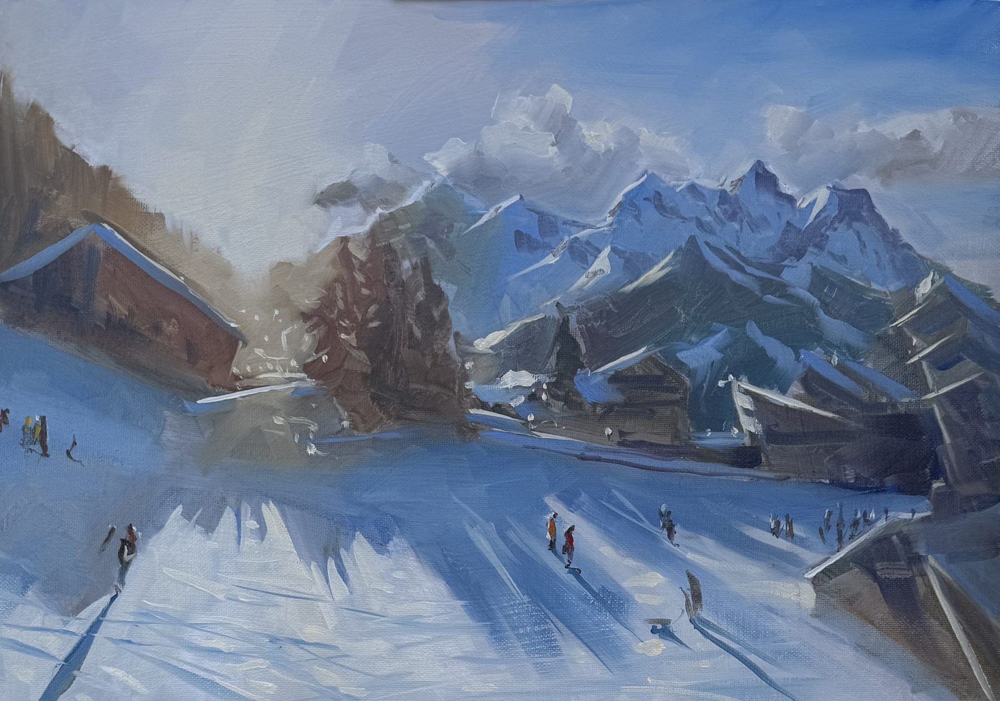
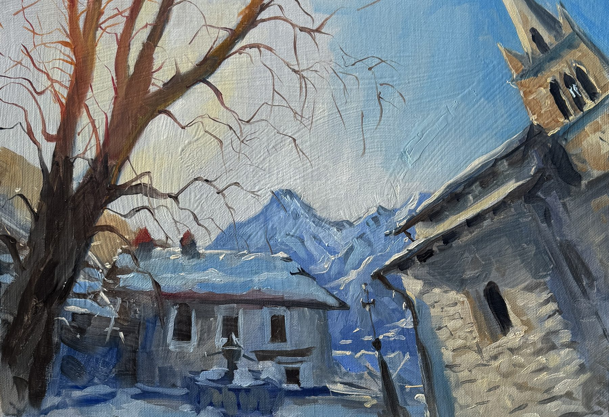
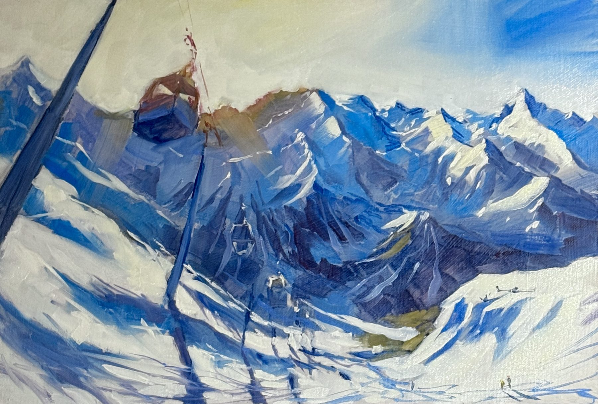
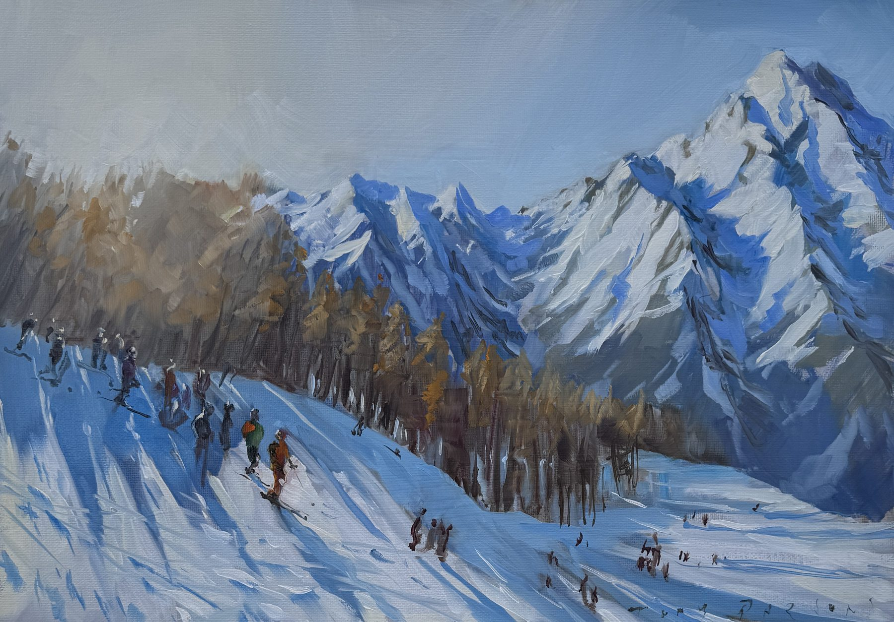

17kg of kit on my back. Skis on my feet. A back that was testing its limits.
"I was aiming for an alpine feel, focusing on mid-winter light. When the sun catches the peaks just right they almost glow — and with a bit of practice that light becomes a real pleasure to paint."
A couple of weeks ago I was invited on a skiing trip to Sauze d'Oulx with a group of friends. Part of the motivation was simply to see whether my back would cope, after last year's shenanigans. I've also been steadily refining my plein-air kit — and this trip felt like a proper test: everything pared back to a rig that would fit entirely on my back.
With various wooden boxes and around 17kg on my back, I didn't want the option of falling forwards or backwards, so skis felt like the sensible choice. Skiing with a heavy backpack was still a mission — I had to take it off and swing it onto my front every time I got on a lift. But it meant I could reach some extraordinary viewpoints and set up right in the midst of the action.
One day my leg started shouting at me, so I slowed things down and went in search of the church in the centre of Sauze d'Oulx. It's been there in one form or another for over 800 years. There were several elements I wanted to collide in that sketch, so I deliberately crushed the perspective into something closer to a fish-eye view.
Unlike previous mountain painting trips, I didn't try to work through whiteouts or fog this time — and I think that was the right decision. The first three days were bathed in glorious sunshine. I made five TOAT Sketches in total.
"A couple sold while I was still in the mountains — to people who appear in the paintings themselves."
These are the three that came back with me. They're punctuated in my memory by hot chocolates, a lot of help from friends, and light I won't forget in a hurry.
42×30cm · Oil on canvas · TOAT Sketch · Framed · Worldwide delivery included

Mid-winter light catching the peaks — painted at altitude with the mountain dropping away below. The title says everything about how you have to look at this kind of light.

When my leg started shouting I went looking for the church in the centre of the village — it's been there in one form or another for over 800 years. I deliberately crushed the perspective into something closer to a fish-eye view.

The scale of the Alps only becomes real when you paint it — the lift cables, the tiny figures, the vast white nothing. Set up at the top of the mountain with 17kg on my back and a very clear view of what lay between me and the bottom.

The chaos of a busy mountain piste — figures in all directions, flags, the chalet roof cutting into the corner. Painted in full sunshine on one of those rare winter days when everything is exactly as it should be.
Each of these paintings carries a TOAT token — a physical aluminium disc attached to the back, digitally linked to a verified ownership record. If you ever choose to sell, the provenance travels with it. It's a system I co-invented, and every painting I release now is part of it.
Learn about TOAT →